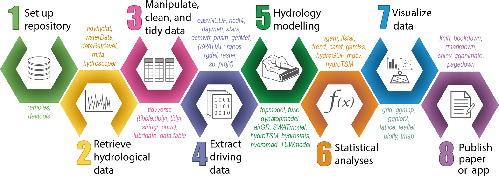
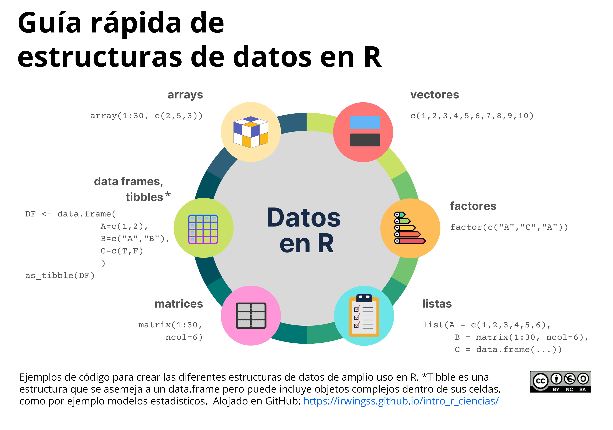
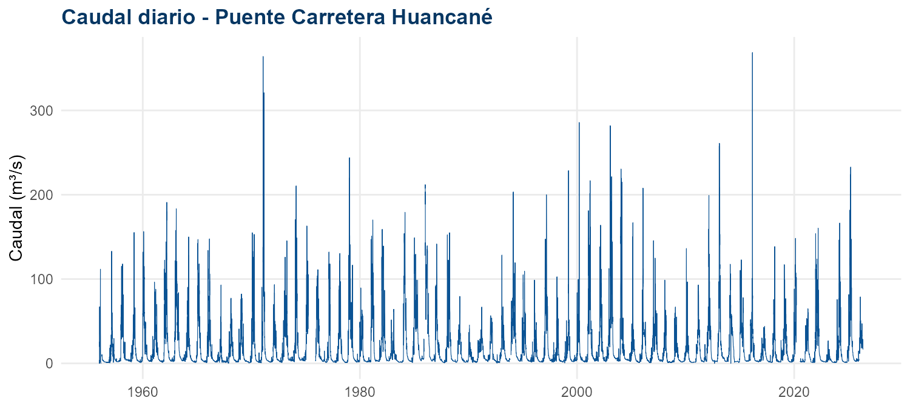

Programación en R Aplicada a la Hidrología, Servicios Climáticos y Adaptación al Cambio Climático
Curso Taller Día 1
Universidad Nacional del Altiplano - Facultad de Ingeniería del Agua y Gestión de Recursos Hídricos
Contenido día 1
- Introducción
- Fundamentos
- Procesamiento y visualización
- Automatización
- Datos climáticos grillados
Introducción
01
R en Ciencias del Agua y Cambio Climático, Proyectos y Estructuras de Carpetas
R en Ciencias del Agua y Cambio Climático
Ciencia de datos
- Es un campo interdisciplinario centrado en extraer conocimiento, valor y patrones predictivos a partir de grandes volúmenes de datos (tanto estructurados como no estructurados). Integra matemáticas, estadística aplicada y programación de software
Hidrología computacional
- Es una disciplina que permite a los investigadores gestionar todo el ciclo de la información: desde la obtención, procesamiento y limpieza de grandes volúmenes de datos, hasta su análisis y modelamiento mediante flujos de trabajo específicos. Además facilita la documentación, visualización y el intercambio de resultados en diversas plataformas.


R en Ciencias del Agua y Cambio Climático
Hidroinformática
- Es una disciplina que aplica las tecnologías de la información, las ciencias de la computación y la inteligencia artificial al estudio, control y gestión de los recursos hídricos. Nace de la necesidad de integrar la hidrología y la hidráulica tradicionales con herramientas computacionales avanzadas.
Fuente: Abbott, M. B. (1991). Hydroinformatics: Information technology and the aquatic environment. Avebury Technical.

Fuente: Slater et al. (2019). Using R in hydrology: a review of recent developments and future directions. HESS, 23, 2939–2963. https://doi.org/10.5194/hess-23-2939-2019
R en Ciencias del Agua y Cambio Climático

¿Por qué R en Hidrología y Cambio Climático?
De la hoja de cálculo al script
Hoja de cálculo
- Fórmulas dispersas en celdas
- Pasos manuales difíciles de rastrear
- Otra estación = repetir todo
- Falla de una máquina a otra
- No existe control de versiones
Script en R
- Cada paso queda escrito y estructurado
- Se ejecuta de nuevo con un clic
- Una función sirve para 1 o 100 estaciones
- Presentación interactiva de resultados
- Control de versiones
R permite procesar grandes volúmenes de datos de forma eficiente, y la presentación interactiva de resultados facilita su comprensión.
En los análisis de grandes cuencas y para los enfoques de cambio climático esto es clave: el mismo análisis se repite para varios modelos, escenarios y periodos.
¿Por qué R en Hidrología y Cambio Climático?
Libre y gratuito
No requiere licencia; funciona en Windows, macOS y Linux.
Construido para analizar datos
Estadística y gráficos de calidad desde su origen.
Reproducible
El script documenta cada paso del análisis.
Paquetes hidrológicos
airGR, hydroGOF, trend, qmap, terra, etc.
CRAN reúne más de 20 000 paquetes y mantiene una guía temática de hidrología (CRAN Task View: Hydrology).
RStudio: Los cuatro paneles

RStudio: atajos y rutas
Atajos de teclado
| Atajo | Acción |
|---|---|
Ctrl + Enter |
Ejecutar la línea o la selección |
Ctrl + Shift + N |
Nuevo script |
Ctrl + S |
Guardar |
Proyectos y estructura de carpetas
Proyectos de RStudio
- Un proyecto es una carpeta con un archivo
.Rproj - Al abrirlo, R trabaja desde esa carpeta
- Las rutas se escriben desde la raíz del proyecto
En el Curso-Taller: doble clic en el archivo .Rproj de la carpeta descargada.
Enlace: https://github.com/arnoldtraverso/Curso-Taller-R-Hidrologia
Proyectos y estructura de carpetas
Estructura del Curso-Taller
Curso-Taller-R-Hidrologia/ ├── Curso-Taller-R-Hidrologia.Rproj ← abrir siempre desde aquí ├── data/ │ ├── raw/ datos originales (no se tocan) │ └── processed/ datos procesados ├── ejercicios/ scripts del curso ├── outputs/ │ ├── figuras/ gráficos generados │ └── tablas/ tablas generadas └── slides/ diapositivas
Los datos de data/raw/ no se modifican: Los resultados se irán generando conforme se avance con los scripts del Curso-Taller.
Fundamentos
02
Objetos, vectores, data frame, listas, fechas con lubridate, paquetes y tidyverse
Estructuras de datos

Imagen tomada del Enlace: https://irwingss.github.io/intro_r_ciencias/estructurasdatos.html
Objetos y asignación
Guardar un valor con <-
R como calculadora hidrológica
Nombres válidos: empiezan con letra, sin espacios ni tildes (pp_anual, no pp anual ni precipitación). R distingue mayúsculas: Caudal ≠ caudal.
Tipos de datos
| Tipo | Ejemplo | Uso en hidrología |
|---|---|---|
numeric |
12.69 |
caudal, precipitación, altitud |
character |
"Huancane" |
nombre o código de estación |
logical |
TRUE, FALSE |
¿es año seco?, ¿falta el dato? |
Date |
as.Date("2024-01-01") |
fecha de la observación |
Vectores
Precipitación mensual promedio — Huancané (1991–2020)
Operaciones básicas en la serie mensual
Vectores: seleccionar elementos
La selección se realiza empleando Corchetes
Condiciones lógicas
Data frame
Tabla de estaciones (una fila = una estación)
Estructura clásica de un data frame
estaciones <- data.frame(
nombre = c("Ananea", "Muñani", "Putina", "Huancané", "Cojata"),
codigo = c("000826", "000785", "157414", "000786", "000827"),
lat = c(-14.676, -14.767, -14.921, -15.207, -15.012),
lon = c(-69.534, -69.952, -69.876, -69.758, -69.361),
altitud = c(4660, 3932, 3861, 3842, 4347)
)Data frame: acceder a los datos
Verificar el contenido del data.frame
Aplicando una condición básica
Listas
Un objeto que guarda objetos de distinto tipo
Asignamos las características de la Est. Huancané (nombre, código, coordenadas, valores)
Explorando la lista, empleamos $ y corchetes
Las listas son clave para automatizar: en la sección 04 guardaremos una estación por elemento y aplicaremos la misma función a todas con purrr::map().
Fechas con lubridate
Los datos del visor ANA traen la fecha como texto
Fechas: secuencias y diferencias
Creando la secuencia de fechas o vector fecha
# Primera forma
dias <- seq(ymd("2024-01-01"), ymd("2024-12-31"), by = "day")
length(dias) #> 366 (2024 es bisiesto)
meses <- seq(ymd("1991-01-01"), ymd("2020-12-01"), by = "month")
length(meses) #> 360 (30 años × 12)
# Segunda forma
dias <- seq(as.Date("2024-01-01"), as.Date("2024-12-31"), by = "day")
meses <- seq(as.Date("1991-01-01"), as.Date("2020-12-01"), by = "month")El registro tiene 25 208 días con dato, pero el periodo abarca 25 692: faltan 484 días que no aparecen ni como NA. Las secuencias de fechas sirven para detectarlos (sección 03).
Paquetes y tidyverse
| Paquete | Para qué |
|---|---|
readr / readxl |
importar datos |
dplyr |
filtrar, resumir |
tidyr |
reordenar tablas |
lubridate |
fechas |
ggplot2 |
gráficos |
purrr |
repetir tareas |
Primer contacto con los datos reales
¿Qué hay que arreglar?
FECHAes texto → convertir condmy()- Está ordenado de 2026 a 1956 → ordenar
- Faltan días sin fila → completar y contar vacíos
- En precipitación hay días duplicados (2017–2024)
Eso es la sección 03: procesamiento y control de calidad.
Procesamiento y visualización
03
Importación (readr, readxl), dplyr/tidyr, NAs y control de calidad, agregación diaria → mensual → anual, ggplot2
Importar y ordenar el caudal
Los verbos de dplyr
| Verbo | Qué hace | Ejemplo con el caudal |
|---|---|---|
filter() |
elige filas | filter(q > 200) → 72 días |
mutate() |
crea columnas | mutate(vol_hm3 = q * 86400 / 1e6) |
arrange() |
ordena | arrange(desc(q)) → 368.6 el 27/02/2016 |
select() |
elige columnas | select(fecha, q) |
summarise() |
resume | summarise(q_medio = mean(q)) → 18.3 |
Completar las fechas faltantes
Los días sin dato no tienen fila → hay que crearlos
Precipitación: registros duplicados
Precipitación: una fila por día
Regla del curso: usar 00:00; si no existe, 05:00
Antes de calcular cualquier estadístico hay que conocer el dato: un error de formato puede duplicar la lluvia anual sin que aparezca ningún mensaje de error.
Control de calidad básico
Control de calidad: mapa de vacíos

Estación Huancané (000786): sin datos en 2010–2016 y 2020–2022. Antes de usar una estación hay que saber qué periodo cubre realmente.
Agregación: diaria → mensual
Agregación: mensual → anual
summarise() calcula en orden: si q se calculara primero, n_meses contaría sobre el valor anual y no sobre los 12 meses.
ggplot2: la gramática de los gráficos
ggplot(): datosaes(): qué variable va en cada ejegeom_*(): la forma (línea, barra, punto)labs(),theme(): títulos y estilo- Las capas se suman con
+

ggplot2: régimen y variabilidad
Febrero concentra el mayor caudal (57.4 m³/s) y setiembre el menor (2.6 m³/s). En 2023 el caudal medio anual fue de 4.75 m³/s, una cuarta parte del promedio (17.9 m³/s).
Exportar resultados
data/raw/sigue intacto: todo se puede regenerar ejecutando el script- Script completo:
ejercicios/02_Procesamiento.R(con ejercicios E1–E6)
Automatización
04
Funciones propias, if/else (años secos/húmedos), for sobre múltiples estaciones, iteración con purrr::map
Funciones propias
Escribir la limpieza UNA vez y reutilizarla
leer_senamhi <- function(archivo) {
read_excel(archivo, skip = 13) |>
rename(fecha = 1, hora = 2, valor = 3) |>
mutate(fecha = dmy(fecha)) |>
arrange(fecha, hora) |>
distinct(fecha, .keep_all = TRUE) |> # regla 00:00 → 05:00
select(fecha, valor) |>
complete(fecha = seq(min(fecha), max(fecha), by = "day"))
}Funciones: argumentos por defecto
Condicionales: if / else
Condicionales para una columna: case_when()
if() evalúa un solo valor; case_when() evalúa una columna completa. Los años más secos: 2023 (4.75), 1983 (7.23), 1967 (7.67), 1990 (8.23) y 2009 (9.29 m³/s).
Bucles for: repetir para cada estación
resumen <- vector("list", length(archivos)) # lista vacía
for (i in seq_along(archivos)) {
datos <- leer_senamhi(archivos[i])
anual <- datos |> agregar_mensual() |> agregar_anual()
resumen[[i]] <- tibble(
estacion = nombres[i],
pct_faltante = round(mean(is.na(datos$valor)) * 100, 1),
pp_anual = mean(anual$valor[anual$anio %in% 1991:2020])
)
}
resumen <- bind_rows(resumen)Bucles for: el resultado
| Estación | Periodo | % faltante | Años comp. | PP 1991–2020 (mm) |
|---|---|---|---|---|
| Muñani | 1964–2026 | 14.8 | 46 | 646.9 |
| Huancané | 1963–2026 | 17.0 | 47 | 658.3 |
| Ananea | 1963–2024 | 14.3 | 49 | 623.6 |
| Cojata | 1956–2026 | 1.5 | 59 | 711.4 |
| Putina | 1970–2026 | 14.7 | 40 | 640.1 |
Cinco estaciones procesadas con el mismo código. Con 50 estaciones, el bucle sería exactamente el mismo.
Iteración con purrr::map()
# Une la lista en UNA tabla larga con la columna "estacion"
pp_todas <- pp_lista |> list_rbind(names_to = "estacion")
nrow(pp_todas) #> 114159
# Con la tabla larga, group_by() reemplaza al bucle
pp_todas |>
group_by(estacion) |>
summarise(pct_faltante = mean(is.na(valor)) * 100,
maximo = max(valor, na.rm = TRUE))for y map() hacen lo mismo; map() es más corto y no necesita preparar la lista vacía.
Todas las estaciones en un gráfico
facet_wrap() hace un panel por estación. Entre 2010 y 2016 solo Cojata tiene años completos: es un vacío de toda la red, no de una estación.

Datos climáticos grillados
05
Paquete terra: lectura de NetCDF, recorte de cuenca, climatología, mapas, precipitación areal y balance P – ETP
PISCO: datos grillados del Perú
- PISCOp v3.0 (SENAMHI): precipitación diaria 1981–2025, celdas de 0.1° (~11 km)
- Formato NetCDF (
.nc): un “cubo” longitud × latitud × tiempo - El archivo nacional pesa 1.5 GB (16 436 días)
terra::crop() sobre el archivo nacional tarda más de 10 minutos; leer solo la ventana con ncdf4 tarda menos de 1 segundo. El recorte (5.9 MB) ya está en data/raw/pisco/.
Leer un NetCDF con terra
library(terra)
pp_dia <- rast("data/raw/pisco/PISCOp_v3_diario_Huancane.nc")
pp_dia
#> class : SpatRaster
#> size : 11, 11, 16436 (nrow, ncol, nlyr)
#> resolution : 0.1, 0.1 (x, y)
#> extent : -70.3, -69.2, -15.5, -14.4 (xmin, xmax, ymin, ymax)
#> coord. ref. : lon/lat WGS 84 (EPSG:4326)
#> unit : mm
#> time (days) : 1981-01-01 to 2025-12-31 (16436 steps)De diario a mensual con tapp()
La cuenca: datos vectoriales
Climatología 1991–2020
# Normal climatológica: periodo estándar de 30 años (OMM)
pp_normal <- pp[[year(fechas) %in% 1991:2020]] # 360 meses
pp_anual <- tapp(pp_normal, "years", sum) # 30 mapas: total anual
pp_media <- mean(pp_anual) # 1 mapa: media anual
pp_regimen <- tapp(pp_normal, "months", mean) # 12 mapas: régimen
plot(pp_regimen, nc = 4)Mapa con ggplot2
pp_df <- as.data.frame(pp_media,
xy = TRUE)
ggplot() +
geom_tile(data = pp_df,
aes(x, y, fill = mean),
color = "grey85") + # grilla
geom_sf(data = st_as_sf(cuenca),
fill = NA) +
geom_sf(data = st_as_sf(rios),
color = "#00BFFF") +
annotate("point", # salida
x = salida[1], y = salida[2],
shape = 21, fill = "#FF6732") +
annotate("segment", # norte
x = -70.22, xend = -70.22,
y = -14.66, yend = -14.50,
arrow = arrow())En la cuenca la lluvia va de 560 a 942 mm/año; es mayor al noreste (subcuenca 2).

Climatología mensual en la cuenca
Diciembre a marzo concentra el 68 % de la lluvia anual (489 de 716 mm). En julio caen apenas 5 mm.

Precipitación areal
# Promedio de las celdas, ponderado por la fracción dentro de la cuenca
pp_areal <- extract(pp, cuenca, fun = mean, weights = TRUE,
na.rm = TRUE, ID = FALSE)
pp_cuenca_mes <- pp_areal |>
pivot_longer(everything(), values_to = "pp") |>
mutate(fecha = fechas)
#> Media anual 1991–2020 de la cuenca: 716 mmPISCO frente a la estación
413 meses comunes (1981–2025). PISCOp v3 subestima en un 4 % la estación Huancané. Como PISCO incorpora las estaciones del SENAMHI, esto no es una validación independiente.

Temperatura por subcuenca
a_largo <- function(datos, nombre) {
datos |>
pivot_longer(-Date, names_to = "subcuenca", values_to = nombre) |>
mutate(subcuenca = parse_number(subcuenca)) |>
rename(fecha = Date)
}
temp <- inner_join(a_largo(tmax, "tmax"), a_largo(tmin, "tmin"),
by = c("fecha", "subcuenca"))
nrow(temp) #> 73050 (14610 días × 5)
temp |> filter(tmin > tmax) |> nrow() #> 0Fuente: PISCO temperatura diaria 1981–2020 (SENAMHI), promediada por subcuenca. Tmax: doi.org/10.6084/m9.figshare.20522806 · Tmin: doi.org/10.6084/m9.figshare.20533715
ETP por Hargreaves-Samani
\[ETP = 0.0023 \cdot R_a \cdot (T_{media} + 17.8) \cdot \sqrt{T_{max} - T_{min}}\]
etp_dia <- temp |>
left_join(info_sub, by = "subcuenca") |> # latitud y área
mutate(etp = hargreaves(tmax, tmin, lat, fecha))
etp_cuenca_mes <- etp_dia |>
group_by(subcuenca, area_km2, fecha = floor_date(fecha, "month")) |>
summarise(etp = sum(etp), .groups = "drop") |> # diaria -> mensual
group_by(fecha) |>
summarise(etp = weighted.mean(etp, area_km2)) # ponderado por área
#> ETP media anual 1981–2020: 1105 mm\(R_a\) = radiación extraterrestre (FAO-56), función de la latitud del centroide y del día del año.
Balance P – ETP
Exportar: entrada para el Día 2
PP_ETP_mensual_cuenca.csv + el caudal de Huancané = todo lo que necesita un modelo hidrológico mensual (GR2M) en el Día 2.
Programación en R Aplicada a la Hidrología y Cambio Climático